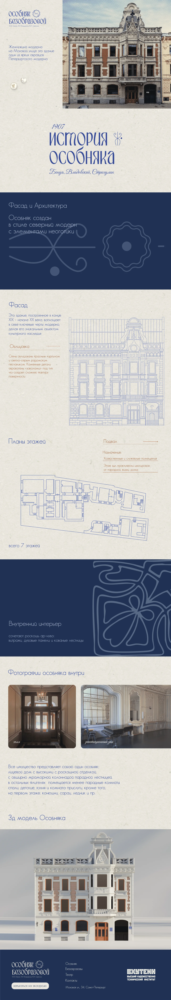
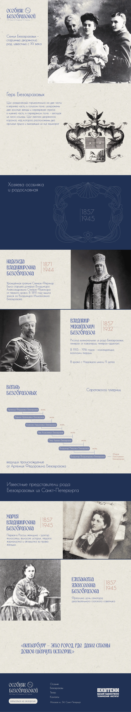
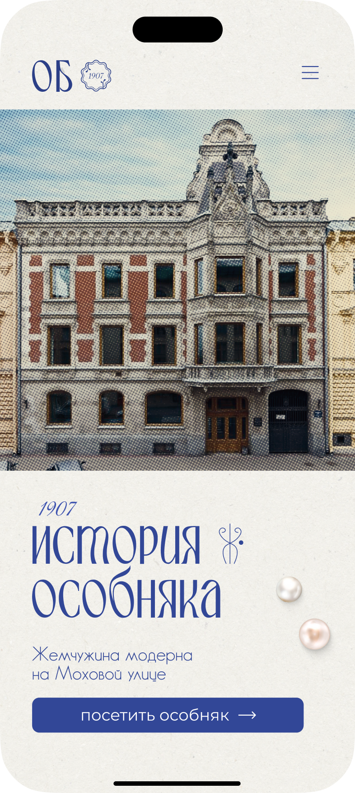
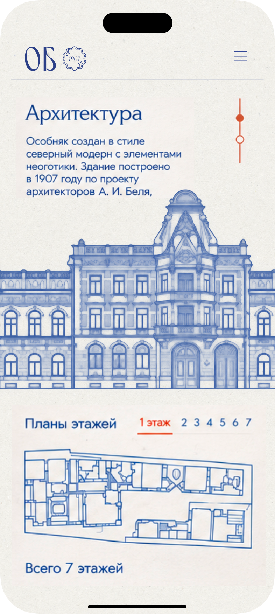
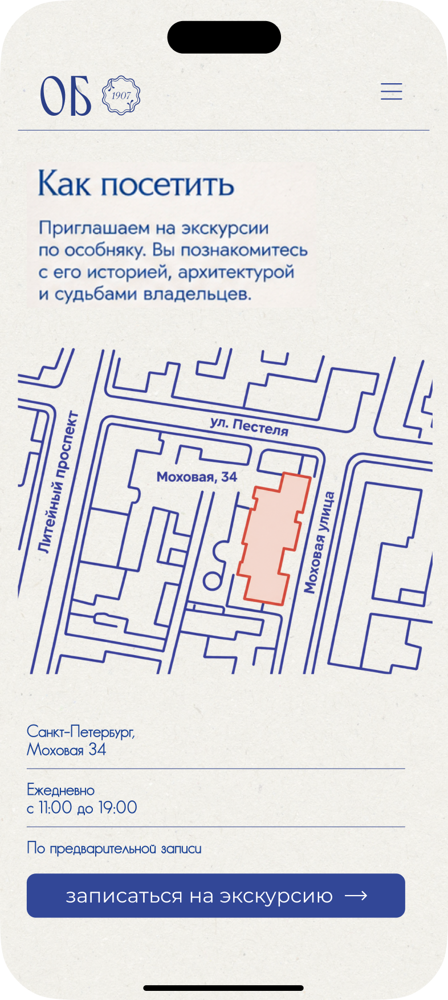

1. Архитектура особняка
Изучение пространства через планы этажей, фотогалерею интерьеров и 3D модель, созданную в Blender

Проект исследует историю, архитектуру и культурный контекст здания на Моховой, 34 в Санкт-Петербурге
Заинтересовать пользователя историей особняка и мягко привести его к желанию посетить экскурсию
открыть сайтИзучение пространства через планы этажей, фотогалерею интерьеров и 3D модель, созданную в Blender
Раздел рассказывает о семье Безобразовых: генеалогическом древе, связи с Саратовской губерни и самых ярких представителях рода
Раздел посвящен институту РГИСИ: истории его возникновения, архивным фотографиям и связи здания с театральным образованием






Архитектура
Планы этажей
Санкт-Петербург,
Моховая, 34
[анимация, созданная в after effects]
[3D-модель фасада, созданная в Blender]